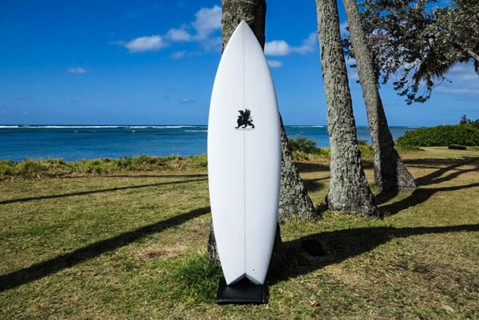
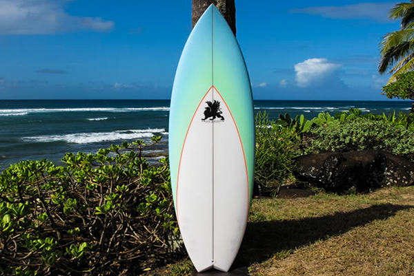

| Modern Fish | |
|---|---|
|  | Gregory Griffin created this in 2005 at the peak of the 'Fish' movement to be the Ultimate Fish blending performance Shortboard in the Fish market. The Fish tail has a narrower nose and a more Shortboard type entry for higher performance surfing. The 5 fin set up works really well on these wider tails . |
| Thruster Quad | |
|  | This is a Thruster Quad design that Gregory Griffin created. This board can be ridden with 4 fins or Thrusters. |